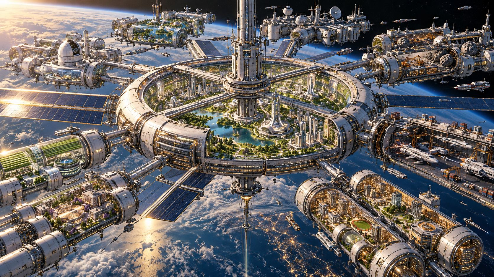
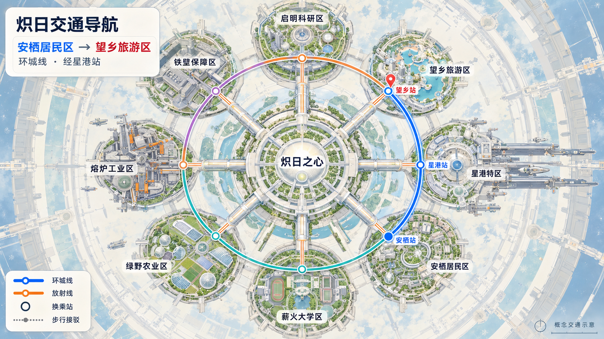
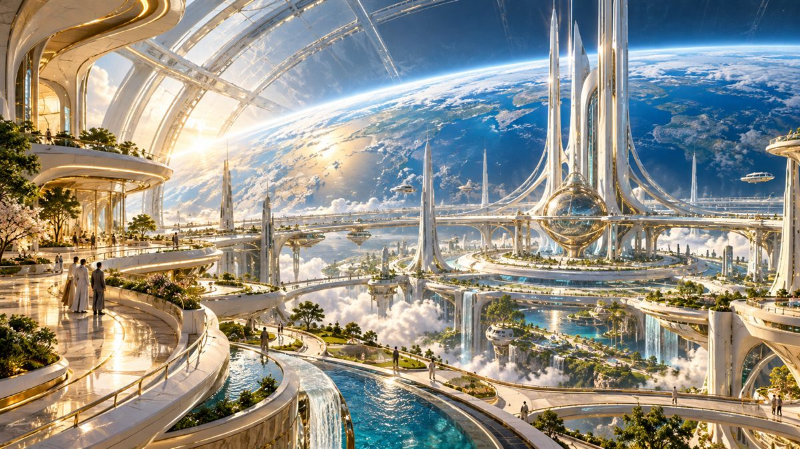
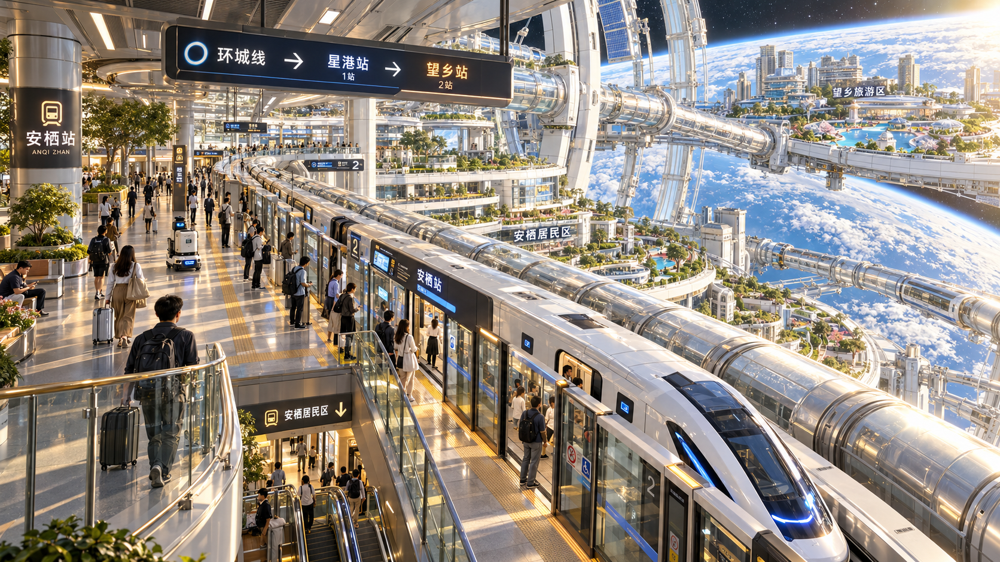
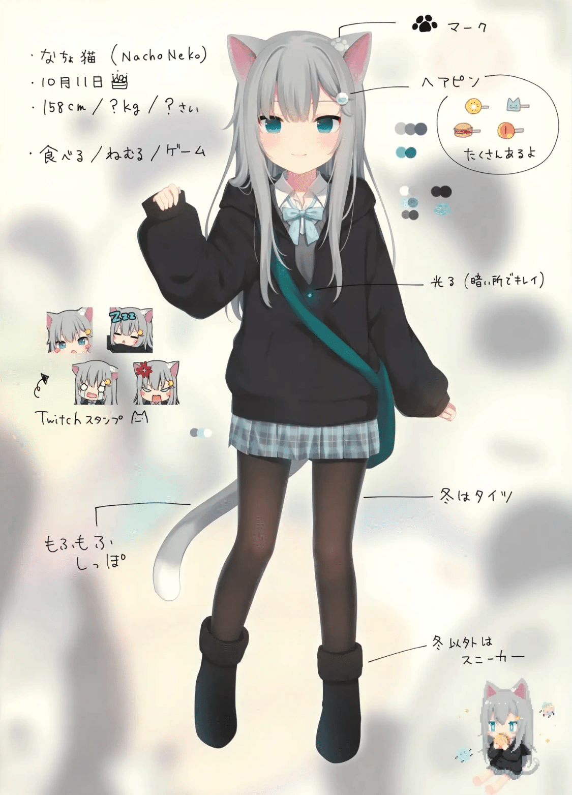
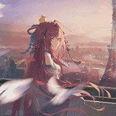

01 / 一座城市的答案把对未来的想象，
概念规划数据
把对未来的想象，
变成可以抵达的日常。
从地球出发，穿过云层和星光。炽日将居住、生态、能源与交通编织成一座会呼吸的轨道城市；宏大的工程，最终落在每个人的生活里。
8功能环区
12径向连接
1太空电梯

03 / 一心八环
每一环，都是生活的一面。
以城市中枢为心，八个功能环彼此连接。从清晨的菜园，到深夜依然明亮的星港，城市在这里有了完整的节奏。

玄甲环 · 防护
城市的第一道拥抱。外层屏障与监测系统守护每一次日出，也让生活有安心的边界。
04 / 城市在流动
把距离，交给光。
高铁、环轨和径向通道将各个生活场景连成一个整体。每次出发，都能看到不同的炽日。

连接星港，也连接日常。
在像素城区里寻找目的地，或打开高铁沙盘，看单节列车沿六条线路运行。
查看动态演示 →05 / 互动城市地图
走进炽日。
看列车驶过云海，搜索街道与地点、规划步行路线，也可以前往高铁沙盘查看六条线路。
06 / 炽日智能管家你好，
你好，
我是猫羽雫。
初来炽日？让我带路喵。认识八环、寻找高铁、去找绘梨衣，都可以从这里出发。想聊学习、生活或更多话题，也欢迎到扣子找我。
本站使用猫羽雫形象与本地导览内容；扣子智能体的开放式对话请通过旁边的入口使用。猫羽雫炽日城市智能管家 · 角色导览

CHIRI · CITY CONCIERGE

07 / 一位同行者城市很大。
城市很大。
有人陪你说话。
绘梨衣在小本子上写下回应。你可以问她炽日的城市与路线，也可以讲讲今天的心情。她会陪你慢慢走过这座城。
打开绘梨衣的小本子 ↗本地对话可直接体验；开放式模型对话可在页面内自行配置。